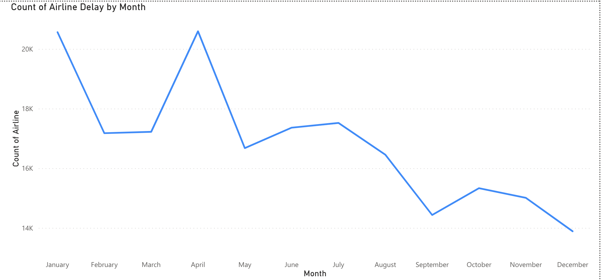
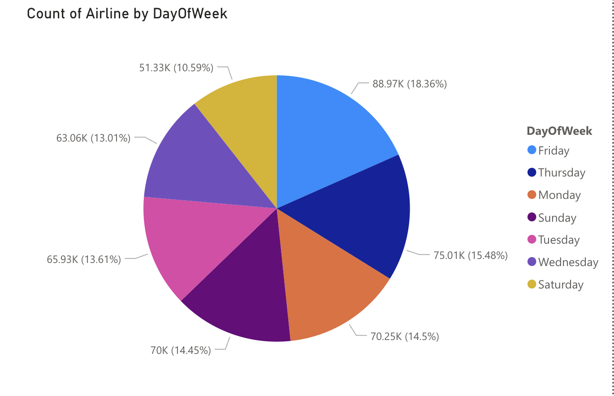
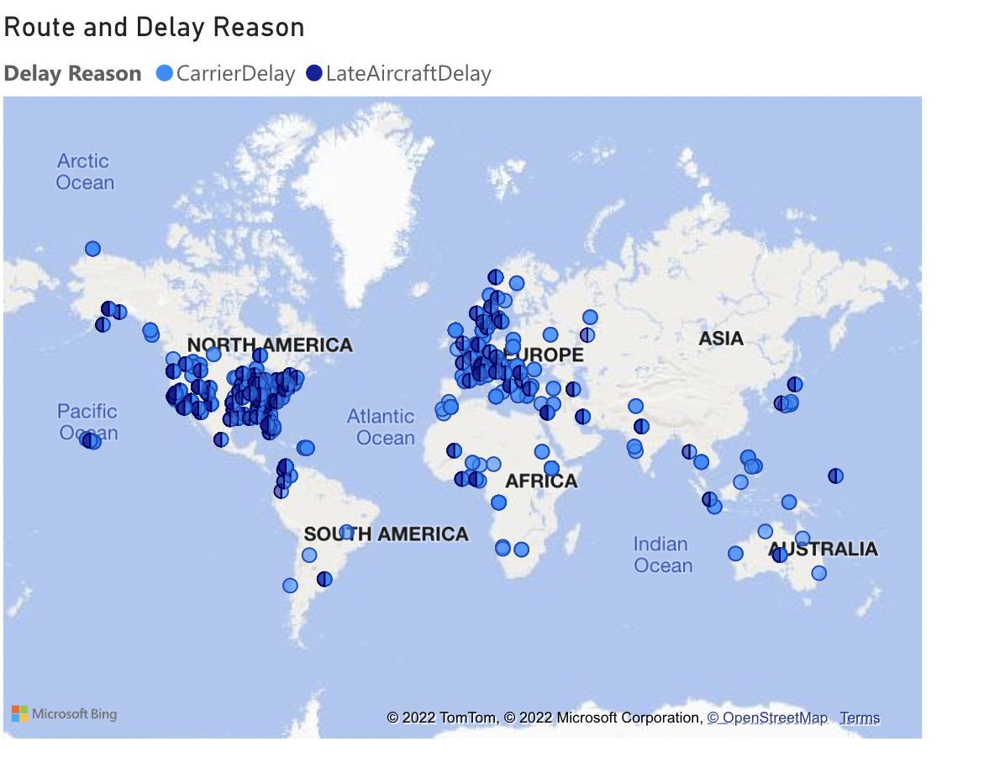
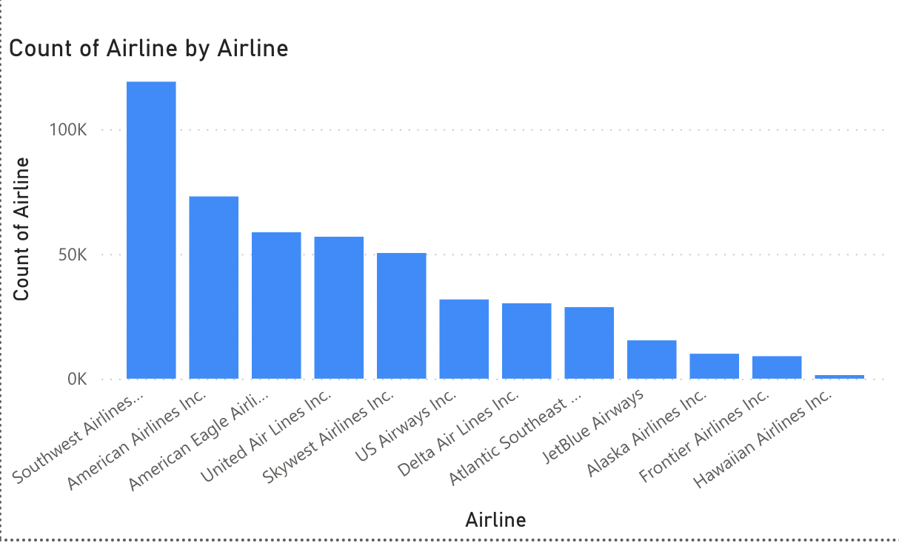
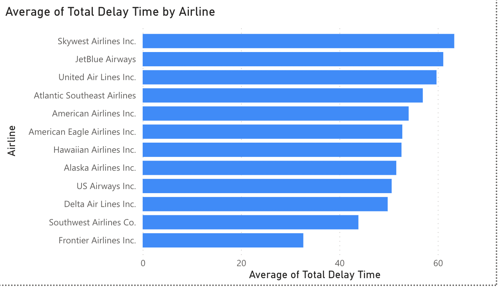

While brainstorming the ideas for the current business problems and landed up, Covid-19 pandemic has affected the airline sector immensely. To gain the business and grow back to its potential growth post the pandemic. It must tackle and decline its flight delay rate to gain the market capital. So, we have decided to Visualize the flights, delay data interactively which includes delay timelines for each flight among the cities in USA by the major airlines.
We are extracted the data from https://www.kaggle.com/datasets/flight-delay-and-causes-2019 which contains DayOfWeek - (Monday-Sunday),Date → Scheduled dateDepTime → Actual departure time (local, hhmm),ArrTime → Actual arrival time (local, hhmm),CRSArrTime → Scheduled arrival time (local, hhmm),UniqueCarrier → Unique carrier code,Airline → Airline company,FlightNum → flight number,TailNum → plane tail number,ActualElapsedTime → Actual time an airplane spends in the air(in minutes) with TaxiIn/Out,CRSElapsedTime → CRS Elapsed Time of Flight (estimated elapse time) in minutes,AirTime → Flight Time (in minutes),ArrDelay → Difference in minutes between scheduled and actual arrival time,Origin → Origin IATA(International Air Transport Association) airport code,Org_Airport → Origin Airport Name,Dest → Destination IATA code,Dest_Airport → Destination Airport Name,Distance → Distance between airports (miles),TaxiIn → Wheels down and arrival at the destination airport gate, in minutes,TaxiOut → The time elapsed between departure from the origin airport gate and wheels off, in minutes,Cancelled → Was the flight canceled?,CancellationCode → Reason for cancellation,Diverted → 1 = yes, 0 = no,CarrierDelay → Flight delay due to carrier(e.g. maintenance or crew problems, aircraft cleaning, fueling, etc), 0 = No, yes = (in minutes),WeatherDelay → Flight delay due to weather, 0 = No, yes = (in minutes),NASDelay → Flight delay by NSA(National Aviation System), 0 = No, yes = (in minutes),SecurityDelay → Flight delay by this reason, 0 = No, yes = (in minutes),LateAircraftDelay → Flight delay by this reason, 0 = No, yes = (in minutes)
Number of rows: 484552 Of all these available columns, we used the most important features that contribute most to the delay of flight insights like Departure Time, Arrival Time, Origin Airport, Destination Airport, Delay Count, Total Number of Delays, DaysofWeek, Month.
AIMS approach to break the problem statement and define data
Initially we explored the dataset by performing exploratory data analysis in python and understood the distribution of the dataset by plotting few bar plots and pie charts. Later on, some data cleaning in removal of outliers and removal of null values and replacing it with most occuring value.
As the data set is very immense, we had done some initial analysis and listed out the use cases that our visualizations should be providing deep insights with an automated dashboard providing quick and latest sales insights inorder to support data driven decision making.
Below are the developed visualizations that answered several questions related to major reasons for the delay in flights.
    